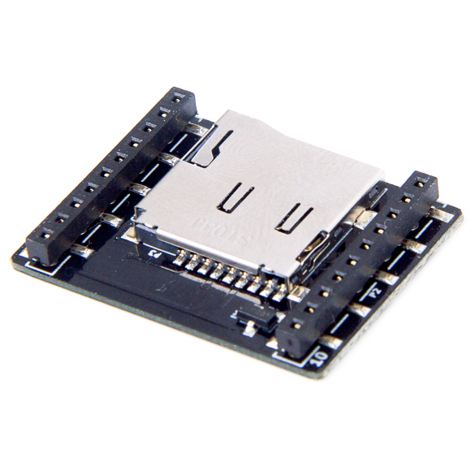

Flying Robots
Physical Hardware Experiments
November 15, 2024
Crazyflie 2.1 Hardware Overview
- Sensors:
- Accelerometer / Gyroscope (BMI088)
- Pressure sensor (BMP388)
- Actuators:
- 4 brushed motors with propellers
- Compute:
- Flight control: STM32 microcontroller (ARM Cortex-M4, 168 MHz, 192 kb RAM, 1 MB flash)
- Communication: nRF51 (ARM Cortex-M0, 32 MHz, 16 kB RAM)
- Extendable with add-on boards (decks)

Crazyflie 2.1 Notable Extensions
Flow-Deck

- Measures height (ToF up to 4m, VL53L1x)
- Measures horizontal velocity (PMW3901)
uSD-deck

- Can store binary flight logs
AI Deck

- Camera (320x320)
- 8+1 core RISC-V MCU (no FPU)
Crazyradio
- nRF52840 with power amplifier and external antenna
- Cortex-M4F (64MHz, 1MB flash, 256Kb RAM)
- 2.4 GHz band
- BlueTooth LE
- proprietary Nordic modes (low latency)
- USB interface